⚔️ D'Artacán y el código trigonométrico secreto de Richelieu ⚔️
Francia está en peligro.
El astuto y traicionero Cardenal Richelieu ha ideado un plan para hacerse con el poder absoluto. Antes de desaparecer, ha escondido un cofre protegido por un complejo sistema de claves matemáticas. Dentro se encuentra un mensaje que podría cambiar el destino del reino.
D’Artacán y los tres mosqueperros —Pontos, Dogos y Amis— han intentado abrirlo… pero no han podido resolver los enigmas.
Ahora os necesitan.
Solo los más valientes, astutos… y matemáticos serán capaces de superar las pruebas y descubrir la clave final.
Pero cuidado: el tiempo es limitado. Si no conseguís abrir el cofre, Richelieu ejecutará su plan.
¡En guardia, jóvenes mosqueperros! Solo resolviendo los enigmas podréis salvar Francia.
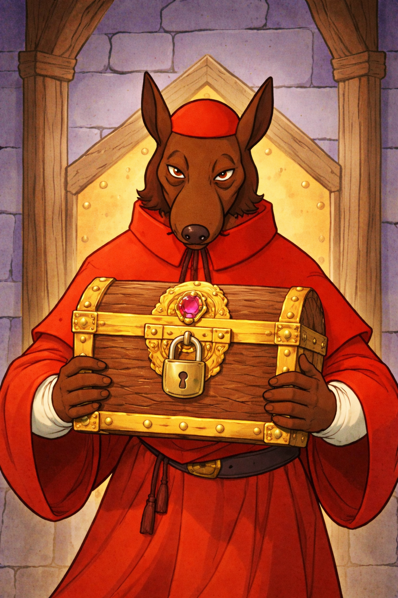
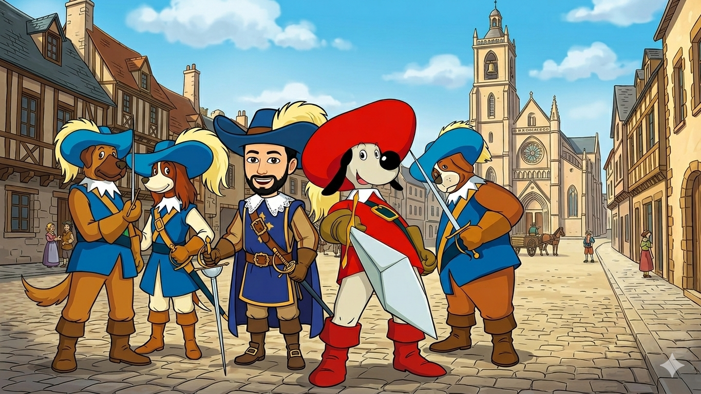
Acceso profesor:
Autor: Joaquín Candañedo.
🗡️ PRUEBA 1: El mapa oculto de Richelieu
Pontos despliega un antiguo mapa encontrado en los aposentos del cardenal.
—“Este mapa señala un camino secreto… pero está incompleto. Solo conociendo la distancia real podremos avanzar.”
El mapa muestra un triángulo que representa el terreno. Si lográis calcular la distancia correcta, podréis descubrir la primera cifra de la clave.
Pontos os mira con seriedad:
—“El destino del reino comienza con este cálculo.”
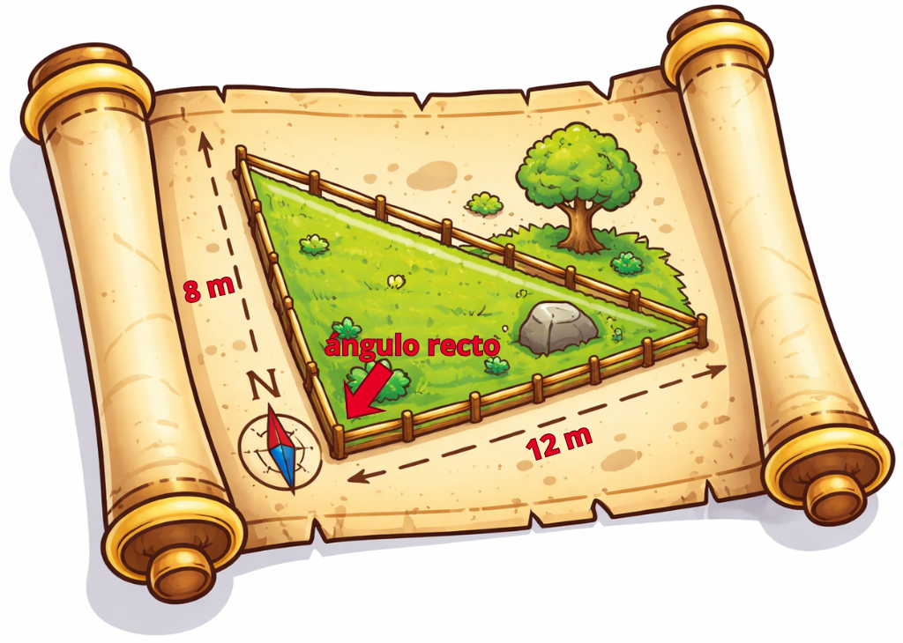
Trunca el resultado.
Aplica Pitágoras
🏹 PRUEBA 2: El ángulo secreto del duelo
Dogos sostiene una espada marcada con símbolos.
—“Este ángulo representa la posición exacta desde la que Richelieu atacará.”
Una inscripción dice:
“Solo quien entienda la inclinación del ataque podrá anticiparlo.”
Debéis determinar el valor del ángulo y transformarlo correctamente para obtener la siguiente cifra.
—“¡Rápido! Cada segundo cuenta.”
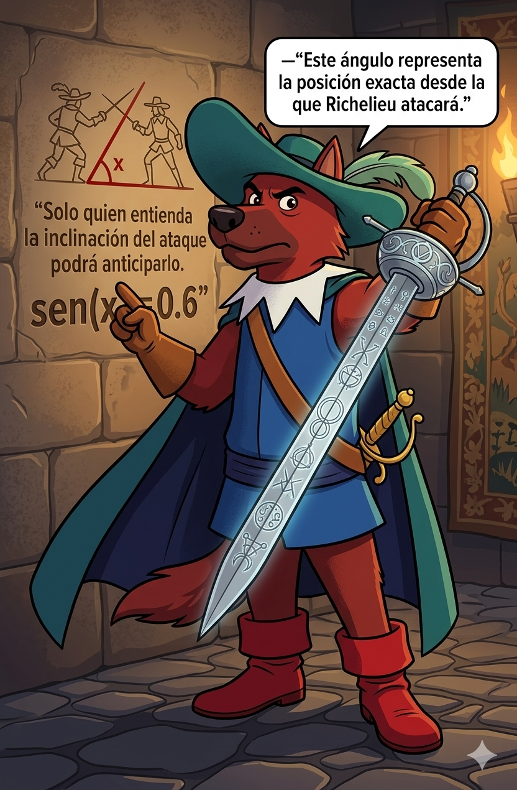
\[\text{sen(x)}=0.6 \]
Divide el resultado en grados (sexagesimales) entre 4 y trúncalo.
🏰 PRUEBA 3: La torre vigilada
Amis señala hacia una torre del castillo.
—“Desde 4 m he observado que la tangente del ángulo θ es 3.”
—“Si descubrís la altura real de la torre, podréis desmontar la trampa del cardenal.”
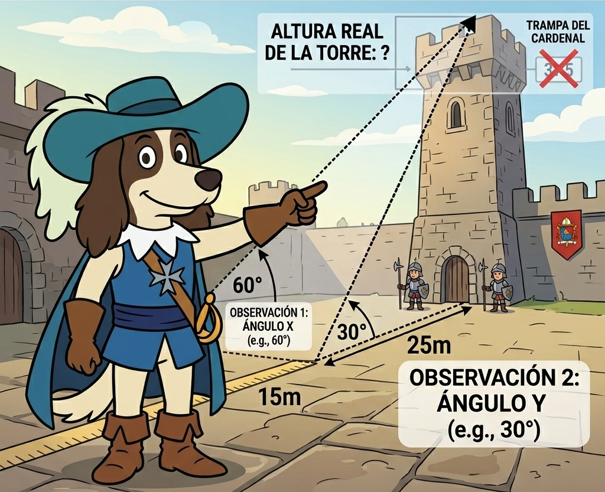
\[ \tan(θ)=3 \]
🐎 PRUEBA 4: El salto del caballo
D’Artacán observa unas marcas en el suelo.
—“Mi caballo saltó desde aquí hasta allí… pero no recuerdo la distancia exacta.”
Un esquema muestra un triángulo y un ángulo conocido.
—“Si calculamos correctamente la distancia, podremos seguir el rastro de Richelieu.”
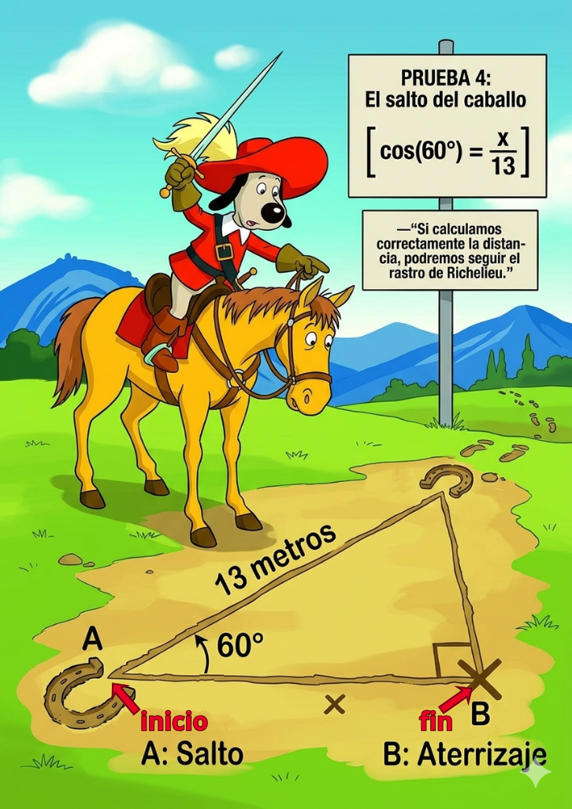
\[ \cos(60°)=x/13 \]
Trunca el resultado.
⚔️ PRUEBA 5: Las razones prohibidas
En una sala secreta, encontráis un libro antiguo con páginas arrancadas.
En la única página legible aparece:
“Las razones ocultas revelan la verdad que el coseno esconde.”
Pontos susurra:
—“Estas funciones no son habituales como seno, coseno y tangente… pero son clave para avanzar.”
Debéis combinar correctamente las relaciones trigonométricas para hallar la cifra.
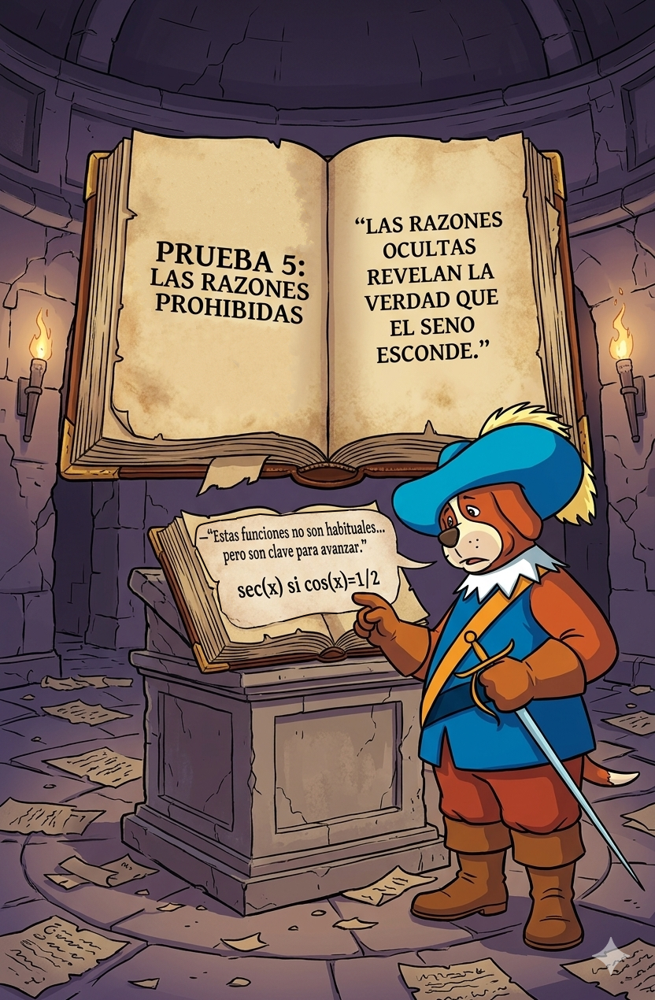
\[ \text{cosec(x) si } \cos(x)=\sqrt(3)/2 \]
🏰 PRUEBA 6: El equilibrio del reino
Una inscripción en la pared dice:
“El equilibrio perfecto nunca se rompe… pero solo los sabios pueden usarlo.”
Amis añade:
—“Esta es una de las leyes fundamentales de la trigonometría. Si la aplicáis bien, encontraréis el siguiente número, el coseno.”
Una vez hallado, una nota añade:
“Recuerda quiénes luchan por el reino… y quién lo protege desde la sombra.”
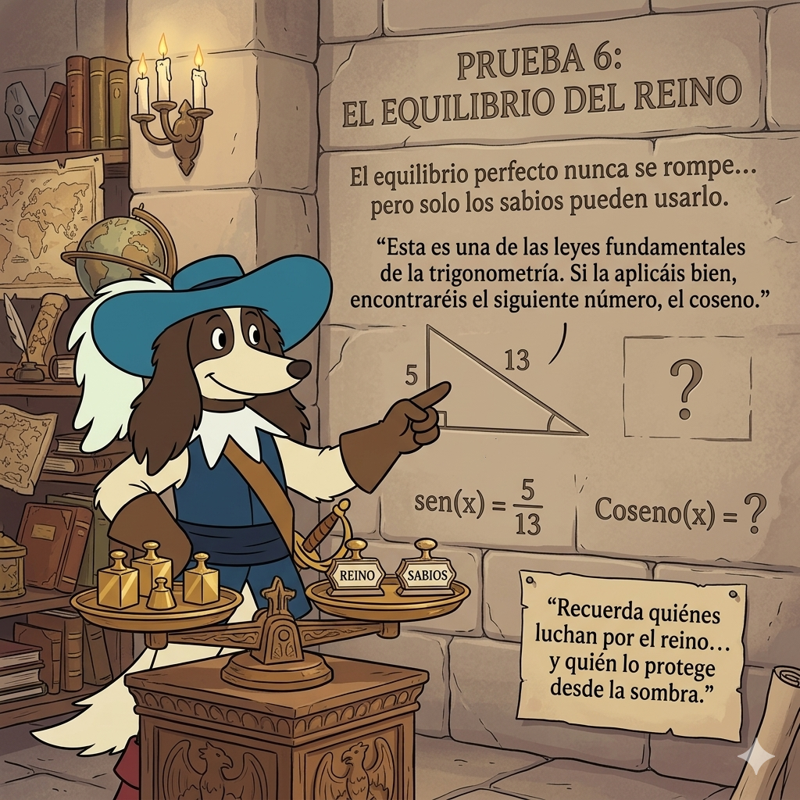
\[ \text{sen(x)}=5/13 \text{ calcula el coseno }\]
Multiplícalo por 13.
📜 PRUEBA 7: El juramento de Rochefort
Rochefort os entrega un pergamino sellado.
—“Este juramento contiene la clave de un triángulo imposible.”
En él aparecen dos lados y un ángulo.
—“Solo resolviendo completamente este triángulo demostraréis que sois dignos de continuar.”
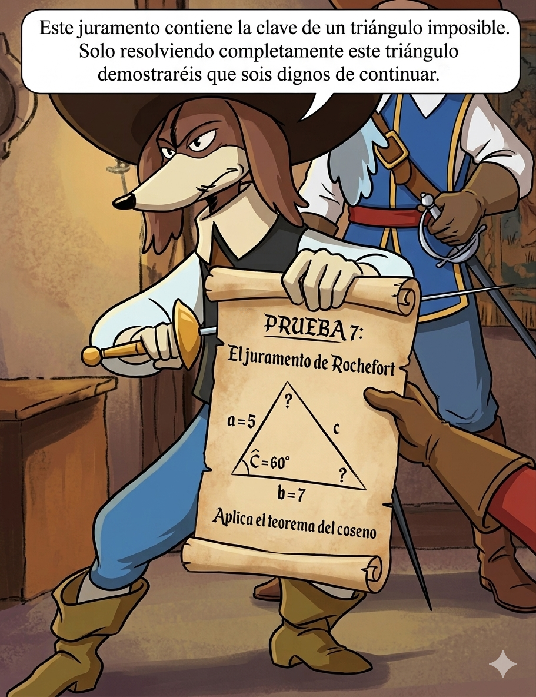
Aplica el Teorema del Coseno.
Trunca el resultado.
🧭 PRUEBA 8: El plano de Widimer
Widimer extiende un plano con líneas paralelas y segmentos.
—“Richelieu ha utilizado proporciones para ocultar distancias reales.”
Una nota al margen dice:
“Todo está conectado… si sabes cómo mirar.”
—“Aplicad la proporcionalidad correctamente y encontraréis la cifra.”
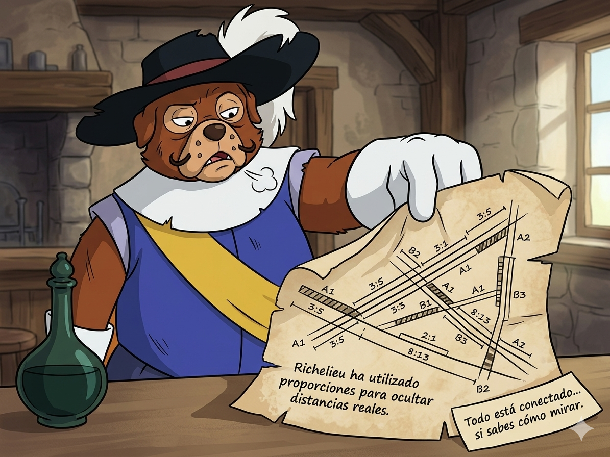
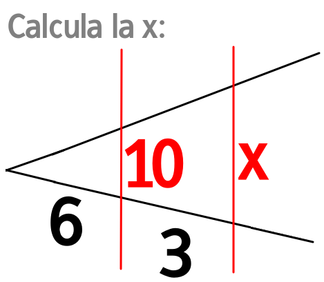
🕵️ PRUEBA 9: La trampa de Milady
D’Artacán encuentra una trampa activada.
—“¡Milady ha estado aquí! Esto no será fácil…”
El mecanismo incluye un triángulo aparentemente sencillo… pero con una segunda operación oculta.
—“No basta con resolverlo… debéis ir un paso más allá.”
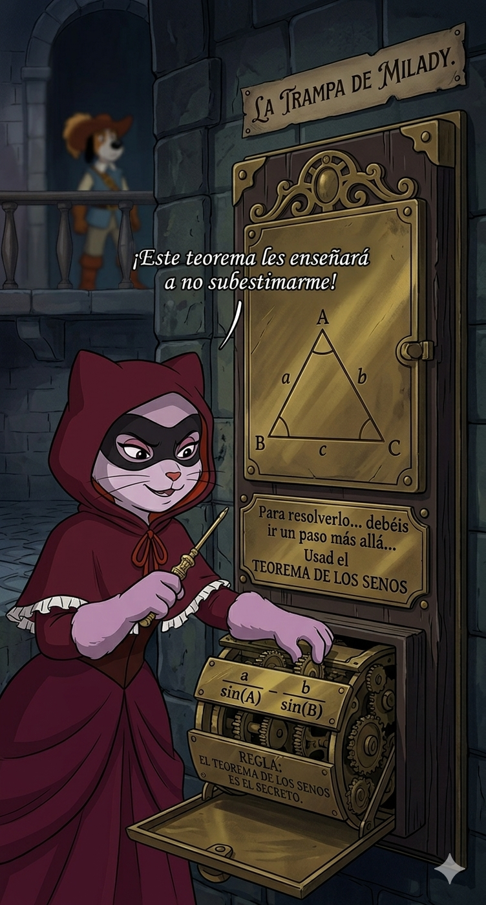
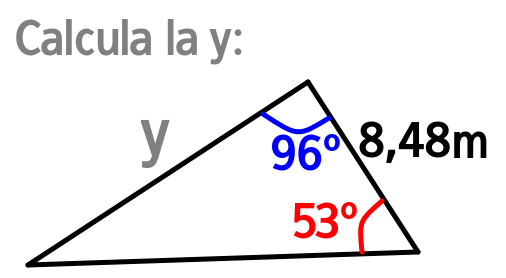
Trunca el resultado.
🔐 PRUEBA 10: El código final
Los cuatro mosqueperros se reúnen a vuestro alrededor.
Dogos dice:
—“Todo encaja… pero falta la última pieza.”
Pontos añade:
—“Este último cálculo representa la armonía perfecta.”
Una inscripción final:
“Solo quien entienda la proporción encontrará el número definitivo.”
D’Artacán sonríe:
—“Estamos muy cerca… no falléis ahora.”
Lado mayor de triángulo semejante al triángulo 3:4:5 pero con perímetro 30
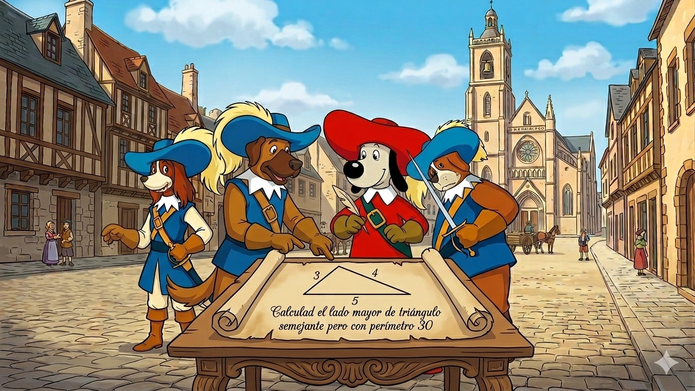
Trunca el resultado.
🔐 Candado final
El cofre está frente a vosotros.
Una placa dorada brilla con una inscripción:
“Diez pruebas. Diez verdades. Un único código.”
Amis observa:
—“Cada número que habéis obtenido forma parte de la clave.”
Pontos añade:
—“El orden es el camino.”
Dogos golpea el cofre con impaciencia:
—“¡Vamos, introducid el código!”
D’Artacán os mira con determinación:
—“Si habéis sido precisos… el reino estará a salvo.”
Introducid la clave completa (concatena sin espacios y en orden todos los resultados validados de las pruebas anteriores).
Si es correcta…
El cofre se abrirá… y habréis derrotado al Cardenal Richelieu.
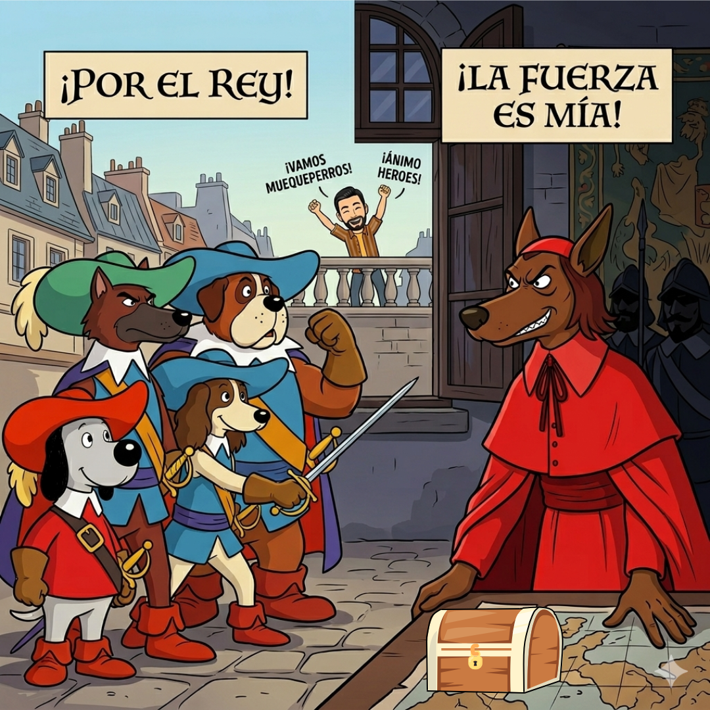
🎉 ¡Victoria! 🎉
¡Habéis salvado el reino!
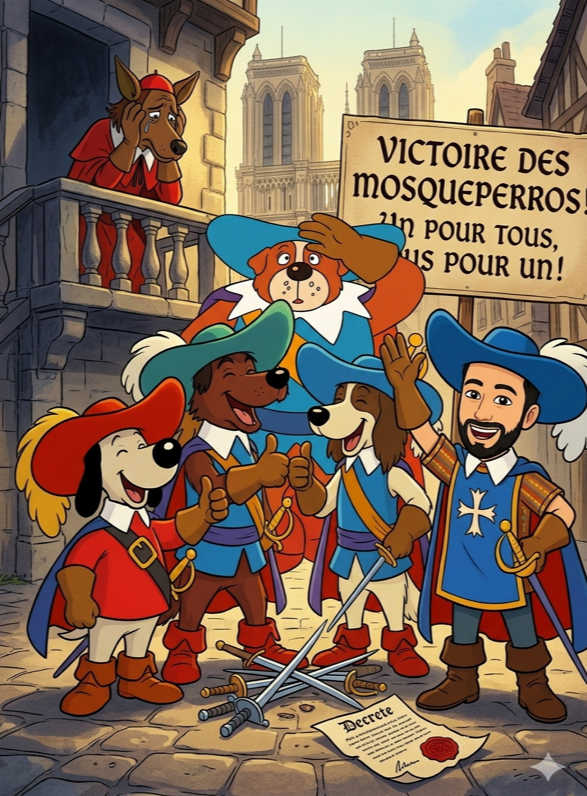
💀 Derrota 💀
¡Habéis perdido! Pero podéis repetir e intentar salvar el reino.